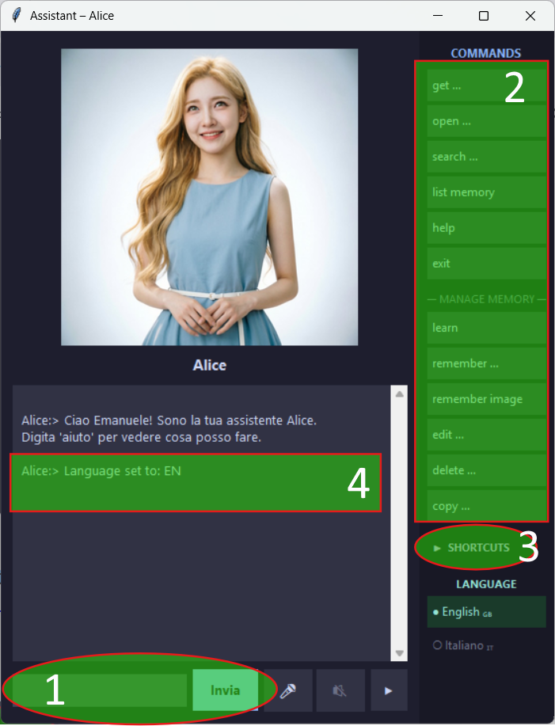
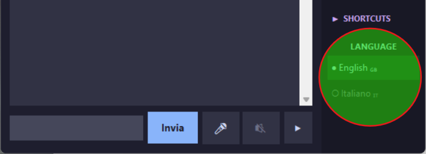

Assistente Desktop Personale – Manuale Utente
Aggiornato alla release 2.2
Installazione
L’applicazione Assistente è portabile e può essere avviata dal desktop o da una chiavetta USB:
Scarica tutti i file necessari dal repository GitLab del progetto Assistente
Windows: scarica e decomprimi AssistenteVOICE_[last release].zip
Esegui assistente.exe
Linux: scarica e decomprimi AssistenteVOICE_[last release]_linux.zip
Esegui assistente
Python: scarica assistenteVOICE_[last release].py
Scarica anche l’intera cartella _dati/
Assicurati che la tua installazione Python abbia tutte le dipendenze richieste (vedi README)
Inserisci assistenteVOICE_[last release].py e la cartella _dati/ nella stessa directory
Esegui assistenteVOICE_[last release].py
Per personalizzare la lingua predefinita e altri parametri, fai riferimento al Manuale di configurazione del file .json
Screenshot
Schermata iniziale

1) Area per inserire i comandi. Premendo il microfono puoi usare i comandi vocali
2) Area dei pulsanti dei comandi. Se ricordi i comandi, puoi chiudere questa barra laterale usando la freccia in basso a destra, accanto all’altoparlante
3) Cliccando sulla freccia a sinistra di SHORTCUT, puoi aprire/chiudere i comandi rapidi personalizzati (per la configurazione, fai riferimento al Manuale di configurazione del file .json)
4) Area delle risposte dell’assistente. Su Windows, la risposta verrà letta a voce se l’altoparlante è attivo. Per interrompere la lettura, inserisci il comando
okSelezione della lingua

Se all’avvio la lingua non è corretta, cambiala usando i pulsanti in basso a destra.
NOTA: le lingue disponibili vengono rilevate automaticamente dall’applicazione. Per cambiare la lingua predefinita o aggiungerne di nuove, fai riferimento al Manuale di configurazione del file .json
TTS e STT
Nota: nella versione Linux è disponibile solo il Text-to-Speech e il pulsante dell’altoparlante sarà disabilitato.
📜 Comandi disponibili
| Comando | Descrizione (lang_it.json) |
|---|---|
dammi <nome> | Recupera un dato |
apri <nome> | Apre file, link o programmi |
cerca <query> | Cerca nella memoria |
elenca memoria | Mostra tutte le voci |
aiuto | Mostra i comandi |
esci | Chiude l’assistente |
GESTIONE MEMORIA | |
impara | Inserimento guidato |
ricorda <nome> <dati> | Salva un’informazione |
ricorda immagine <nome> <dati> | Salva immagini |
modifica <nome> | Modifica una voce |
elimina <nome> | Cancella una voce |
copia <nome> | Copia negli appunti |
SHORTCUT | |
| Lista dei tuoi comandi rapidi personalizzati | |
LINGUA | |
lingua <codice> | Cambia lingua |